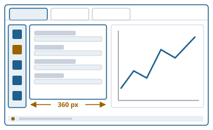

One frame, nineteen apps, one way of working
Function overview for the presentation of the envisionz framework, as of 28 Sep 2026. Two roles in one module: the Swing host
(start-up, main window, tabs, menu and toolbar built from the app descriptors, workspace persistence) and the kit from which the apps assemble their UI:
background work, messages without windows, rail with cards, help, settings, input fields, chart options, tree table, data loading, diagnostics.
For each building block: purpose, API, use in the framework, applications, examples. The examples are shortened.
Many API names are German (e.g. Meldung = message, Kartenbreite = card width, Eingabefeld = input field, Rahmeneinstellungen = frame settings); they are shown unchanged.

Principles of the module
AppDescriptors; settings and "About" are opened via FocusAppEvent, never through a reference to an app.~ in the menu label) are decided by Appsichtbarkeit, frame colours by Themafarbe, the legend title by Legendentitel. Two places carrying the same rule drift apart.BusyRunner with a glass pane shown after a delay; success and failure come back on the EDT.Host, start-up and main window envisionz.swing · .host · .tabs · .menu · .toolbar · .splash
FrameworkBootstrap and SwingHost – from start-up to a running host
start() creates the workspace ~/.<appName>, loads language, icon and font scaling and the frame settings, sets up the log and a crash logger for uncaught exceptions, applies the saved theme and finds the apps. SwingHost holds event bus, service registry, persistence and log, builds an AppContext with its own working folder under .work/ per app instance and answers FocusAppEvent synchronously: bring an open instance to the front, otherwise open a new one. Background, formulas and pseudocode →
Methods
FrameworkBootstrap.builder():appName,workspaceDir,logLevel,useSystemLaf,discoverApps(),appRegistry(r),onStatus(Consumer),start()→SwingHostSwingHost:newContextFor(app, desc),focusOrOpen(appId),saveWorkspace(Path),loadWorkspace(Path),cleanupWorkDirFor(app)SplashScreen.show()(at least 2.5 s),status(msg),uebergebeAn(window)(hand over),schliesseSofort()(close at once)
Used in
What for
The multi-app program and the standalone programs start the same way; the EXE without a console window still leaves a trace in the log.
Example – how launcher-multi starts
SplashScreen splash = SplashScreen.show();
SwingHost host = FrameworkBootstrap.builder()
.appName("envisionz").logLevel(Level.INFO).discoverApps()
.onStatus(splash::status)
.start();
MainFrame[] frame = new MainFrame[1];
SwingUtilities.invokeAndWait(() -> frame[0] = new MainFrame(host, TITEL));
splash.uebergebeAn(frame[0]); // wait for the remaining time, close splash, show windowMainFrame, TabManager, MenuBuilder, ToolbarBuilder – window, tabs, menu, toolbar
The main window carries menu, toolbar, tabs above a collapsible log console and a status strip with a memory meter. Tabs can be detached into their own window; closing it returns the tab to its place. Closing honours the canClose() veto, then calls dispose(). Exit goes through alleSchliessen() (vetoes, dispose, working folders removed) and only then System.exit. Menu (File, Apps, View, Help) and toolbar are built from the descriptors in the order of AppRegistry.all(); apps with ~ in front of the menu label stay invisible.
Methods
new MainFrame(host, title),tabManager(),logConsole(),showLogConsole(),confirmAndExit(),launch()TabManager:openTab(app, state),detachTab,reattachTab,closeTab,alleSchliessen()(close all),openApps(),setTitleFor- Actions:
NewAppAction,OpenWorkspaceAction,SaveWorkspaceAction
Used in
What for
Several files of the same app side by side, a tab on the second screen, save and reopen a workspace.
Background work envisionz.swing
BusyRunner and LoadingGlassPane – long work without a frozen UI
The framework standard instead of a raw SwingWorker: the task runs in the background, a glass pane with a message appears only after 250 ms and then stays at least 400 ms (no flicker), nested calls are counted. onSuccess and onError run on the EDT, the cause unwrapped from the ExecutionException; an error inside onSuccess is no longer reported as an error of the task.
Methods
run(component, message, task, onSuccess, onError[, showDelayMs, minShowMs])runCancellable(…, onCancelled)– with a cancel buttonBackgroundTask<T>.run(BusyContext),BusyContext.setMessageLoadingGlassPane.showOn(component, message[, onCancel]),dismiss()
Used in
What for
Read files, render pages, integrate reactors, write reports while the UI stays usable.
Example
BusyRunner.run(this, "Seite wird gezeichnet …",
busy -> zeichneSeite(n), // in the background (methods illustrative)
bild -> flaeche.setBild(bild), // on the EDT
fehler -> Meldung.fehler(this, "Zeichnen fehlgeschlagen", fehler));LoadingGlassPane.dismiss() must never be renamed to hide(): Component has a deprecated hide() that Swing calls polymorphically – an endless loop.Messages without windows envisionz.swing.meldung
Meldung and Meldungsleiste – replacement for JOptionPane.showMessageDialog
In the main window a message appears in the status strip, per tab (switching tabs shows the message of the visible tab); in other windows at the bottom edge. Notes disappear after 8 s, warnings and errors stay until closed. Every message also goes to the log and into a recording that probes can read; without a screen, log and recording remain. Confirmations, inputs and file choosers stay dialogs by design.
Methods
hinweis(source, text)(note),warnung(source, text)(warning),fehler(source, text[, Throwable])(error)zeige(source, text, title, type)– takes theJOptionPanemessage types for migrationmitschnitt()(recording),letzte()(last),leisteFuer(source);Stufe: HINWEIS, WARNUNG, FEHLER
Used in
What for
Report results and errors without interrupting the user or stopping an automated run.
Example
Meldung.hinweis(this, "Gespeichert: " + datei.getFileName());
Meldung.fehler(this, "Datei nicht lesbar", ex);Rail and cards instead of settings windows envisionz.swing.layout · envisionz.swing.module.layout
Everything that is set is a card next to what it affects: on the left a vertical bar of icon buttons (label in the tooltip), next to it the card in a CardLayout. Background, formulas and pseudocode →
OptionsDock and ContentSidebar – the vertical bar with cards
OptionsDock: toggle buttons and a card area 344 points wide, so cards up to 360 points including border fit. A page is built only when first shown; exactly one button is pressed, pressing it again closes; the app supplies the icons. Before, the bar existed twice, in app-maps and as a rebuild in app-relief. ContentSidebar: content with card bar, action buttons, separators, show/hide and adjustable width.
Methods
new OptionsDock(icon, header, afterChange),addPage(name, iconName, supplier),zeige(name)(show),toggle(),west(),setBeiSichtbarkeit(on visibility)new ContentSidebar(content, width),addCard(key, panel, icon, label),addAction(icon, label, run, toggle),addSeparator(),finishBuild(),showCard(key),setSidebarVisible
Used in
What for
Set axes, colours, data sources, filters and watch the result meanwhile; nine apps with the same handling.
Example 1 – rail with cards (as in app-report)
ContentSidebar rail = new ContentSidebar(mitte, Kartenbreite.GRENZE);
rail.setVisibilityToggleIcons(Icons.load("application-sidebar-collapse.png"),
Icons.load("application-sidebar-expand.png"), Msg.t("rp.bpb.rail"));
rail.addCard("report.bpb.karte.quellen", karteQuellen(), Icons.load("database.png"), Msg.t("rp.bpb.karte.quellen"));
rail.finishBuild();Example 2 – OptionsDock with a lazily built page
OptionsDock dock = new OptionsDock(this::icon, (leiste, umschalter) -> { }, this::repaint);
dock.addPage("Ablesen", "crosshair.png", () -> new AblesenKarte()); // card illustrative
add(dock.west(), BorderLayout.WEST);Kartenbreite, Umbruchlayout, Rollschritt – so that no card gets wider than 360 px
Four measured ways of missing the limit, each with a remedy: a JTable in a scroll pane reports 450 px regardless of content (sichtflaeche), FlowLayout the sum of all children in one row (Umbruchlayout plus gedeckelt), long text the whole line (umbruch), a combo box its longest entry (gedeckelt). Text is wrapped, never cut off. umbruch uses the table form, because Swing multiplies style='width:N' by 1.3. Umbruchlayout (wrap layout) computes the height for the actual width and reports one column as minimum width.
Methods
GRENZE = 360(limit),TEXTBREITE = 320(text width)umbruch(text[, width])(wrap),hinweis(text)→JLabel,umbrochen(button, text),umbrichWennBreiter(button, width)sichtflaeche(table, width, rows)(viewport),gedeckelt(content[, width])(capped)new Umbruchlayout(alignment, h, v);Rollschritt.um(component),nachSchrift(scroll step)
Used in
What for
Cards that stay beside the picture instead of covering it; on 22 Sep 2026, 0 of 56 rail cards were above the limit (8 before).
Example – as in app-charts and app-chiffre
kopf.add(Kartenbreite.hinweis(i18n.get("charts.hk.hinweis")), BorderLayout.SOUTH);
stand.setText(Kartenbreite.umbruch(s));
return Kartenbreite.gedeckelt(tabellenflaeche, INHALT);Help inside the tab envisionz.swing.component · envisionz.swing.menu
HelpPanel, HelpArea, Ueber – documentation pages and field help
HelpPanel embeds a bilingual documentation page (<base>_de.html / _en.html from the class path) as a panel, rendered by framework-viewer with search, links, formulas and SVG. HelpArea is a help area for parameters: a small "?" button next to the field writes the help text into it; the text is also the tooltip. Ueber (about) supplies the "About N-VISIONZ" view that the settings app shows as a card.
Methods
new HelpPanel(resourceBase),load(resourceBase),service(),view()new HelpArea(),show(label, text),clear(),HelpArea.helpButton(label, text, area),tip(text)Ueber.ansicht()(view),text(),kurz()(short)
Used in
What for
Manual and method description in the same window as the work; explanation of a parameter without leaving the card.
Example – help card (as in app-thermo)
helpCard.add(new HelpPanel("/envisionz/apps/thermo/help/thermo-dokumentation.html"), BorderLayout.CENTER);HelpDialog (help as a separate window) is still in the module but has no callers any more; the apps show help through HelpPanel and HelpArea. The input field (below) always carries its help text as a tooltip and gets a button as soon as the app sets a target.Settings, texts and icons envisionz.swing.settings · .theme · .i18n · .icons · .component
SettingsManager, ThemeManager, Rahmeneinstellungen – what the user sets
SettingsManager: UI and icon scaling (0.75 to 3.0) and language (default English), with listeners for language changes; at 100 % the font override is removed, theme values come from getLookAndFeelDefaults(). ThemeManager: 32 FlatLaf themes, saved in theme.properties, fallback system L&F. Rahmeneinstellungen (frame settings, rahmen.properties): preview rows, H2 cache, unpacking limit, EDT-watch threshold, interval and file of the operation trace, start directories per app. Themafarbe reads frame colours from the theme at call time.
Methods
SettingsManager.loadFrom,saveTo(dir, ui, icon, locale),switchLocale(tag),applyUiScale,addLocaleChangeListenerThemeManager.apply(Theme),loadFrom,saveTo,addThemeChangeListener;Theme.allOrdered(),ofCategory,byIdRahmeneinstellungen.lade(dir)(load),vorschauZeilen(),entpackgrenzeMb(),edtwacheSchwelle(),bedienspurDatei()with settersThemafarbe.aus(fallback, keys…),rahmen(),flaeche(),folge(c, set)(follow)
Used in
What for
A settings app with cards instead of the former dialogs ThemeDialog and SettingsDialog; all apps follow the change.
I18n, Icons, RecentDir – texts, icons, remembered folders
I18n reads one bundle per module (UTF-8 via Utf8Control), with suffixes for label, tooltip, accelerator and mnemonic; a missing key shows up visibly as [key]. Icons loads the Fugue icons from /envisionz/swing/resources/icons/, scaled and cached. RecentDir remembers the last folder per app for every file chooser.
Methods
I18n.forModule(baseName),get(key),label,tooltip,accel,mnemonic,hasIcons.load(name),require,loadOr(name, fallback),scaled(name, w, h),setScaleRecentDir.attach(JFileChooser, owner),get(key),remember(key, file)
Used in
What for
Switch between German and English, toolbars with icons only, file choosers in the folder last used by that app.
Example
private static final I18n I = I18n.forModule("envisionz.apps.thermo.resources.messages");
JButton neu = new JButton(Icons.load("arrow-repeat.png"));
neu.setToolTipText(I.get("neu.tip")); // key illustrative
RecentDir.attach(dateiwahl, this);Input building blocks envisionz.swing.component · .color · .font · .line · .symbol
Eingabefeld – label, text field, extra, with fixed focus behaviour
Enter commits and gives up the focus, Escape discards and restores the last value, clicking in from outside selects everything, losing the focus commits only on change, setText does not commit. As a number field it also accepts 1e-3 and a decimal comma; unreadable content does not commit, turns red and bold and is additionally stated in words next to it. On the right a slot for the special-character button, a reference value or the default; the help text is always a tooltip.
Methods
new Eingabefeld(text[, rows]),mehrzeilig(multi-line),mitSonderzeichen(),mitBezug(text),mitHilfe(text),mitVorgabe(text)(with default)alsZahl()(as number),alsGanzzahl()(as integer),istGueltig(),setBeiFehler,setHilfeziel(help target)setBeiUebernahme(Consumer<String>)(on commit),uebernehmen(),verwerfen(),uebernommenerWert()
Used in
What for
Text inputs that stop swallowing keys after Enter; the form the apps are being migrated to step by step.
Example – as in app-charts
Eingabefeld x = new Eingabefeld(i18n.get("charts.hk.x")).alsZahl().mitVorgabe("0.3");
x.setBeiUebernahme(wert -> modell.setX(Double.parseDouble(wert.replace(',', '.')))); // model illustrativeSelection, colour, font, line
FilterComboBox filters while typing (whether a selection starts the next search is decided by its origin, not its content). SteppedComboBox, AutoCompletion, StepperPanel (work steps with state), Haekchenbaum (check-box tree with three states, check mark separate from selection, colour swatch per node), SymbolButton (Ω palette with Greek, maths, super- and subscripts), LineNumberHeader, Textkopie (text copy). ColorFieldGroup binds many colour fields to one colour picker in the card, FontField selects family, size, bold, italic, LineStyleBox and ShapeBox dash style and point shape.
Methods
FilterComboBox.setItems(list),setSelectedValue,getTextnew Haekchenbaum(new Knoten(text, payload, own, on));Zustand: AN, AUS, TEILWEISE (on, off, partial)SymbolButton.withField(JTextField),new SymbolButton(target)ColorFieldGroup.field(initial, onChange),picker();FontField.setOnChange;LineStyleBox.makeStroke(type, w),ShapeBox.shape(idx, size)
Used in
What for
Pick variables out of thousands, show and hide elements, axis titles with formula symbols, style charts.
Example
ColorFieldGroup farben = new ColorFieldGroup();
ColorField linie = farben.field(Color.BLUE, c -> renderer.setSeriesPaint(0, c));
karte.add(linie); karte.add(farben.picker()); // one picker for all fields of the cardChart options for JFreeChart envisionz.swing.chartopts · .charts · .module.chart.dialogs
Option cards – chart, axes, legend, plot, markers, series
Cards bound to a JFreeChart that change it directly: ChartGeneralPanel (title, background image with twelve alignments, origin of the image), AxisOptionsPanel (range, unit conversion, rotated labels), CategoryAxisOptionsPanel, PolarAxisOptionsPanel, LegendOptionsPanel with Legendentitel, PlotOptionsPanel, MarkerOptionsPanel, AnnotationOptionsPanel, PieOptionsPanel, SpiderOptionsPanel, SeriesStylePanel. Every card releases its chart with entbinde() (unbind); before, 277 MB stayed behind after deleting nine charts.
Methods
bind(JFreeChart),entbinde(),loadFromAxis()new AxisOptionsPanel(domain, colours, onChange),new ChartGeneralPanel(onChange),setPlotBackgroundImage(img, label),ausrichtungen()(alignments)SeriesStyle(line, points, colours, width) withwriteTo(Properties, prefix)
Used in
What for
Finish charts for reports, with the same handling in five apps.
Zoomfeld, Achsenherkunft, Bildanker, ConvergenceChart
In JFreeChart an axis knows only "automatic" or "fixed"; a zoom reset therefore also switches off typed limits. Achsenherkunft (axis origin) records the typed range per axis, Zoomfeld (zoom panel, a ChartPanel) restores it after the reset, on all six paths. Bildanker (image anchor) puts the background image as an annotation into the background layer, so it zooms and pans with the data. ConvergenceChart is a ready-made residual plot with its own option card.
Methods
new Zoomfeld(JFreeChart)Achsenherkunft.getippt(ax, min, max)(typed),vergiss(ax)(forget),getippterBereich(ax),bewusst(ax)new ConvergenceChart(),addPoint(iteration, residual),componentWithOptions(),clear()
Used in
What for
Zoom in and back to the limits one entered; a digitised map that stays congruent under the data while zooming; convergence history of the equation solver.
Example
Zoomfeld feld = new Zoomfeld(chart); // instead of new ChartPanel(chart)
ConvergenceChart konv = new ConvergenceChart();
konv.addPoint(it, residuum);Tree table envisionz.swing.treetable
PathTreeTable, PathTreeNode, ColumnSpec – variables by dotted path
A table whose first column is a tree; nodes are created from dot-separated names such as motor.teil.wert. Columns are read-only, editable or combo box, with an additional condition for editability. refresh() keeps the expansion state and the selection, even when values change during a run.
Methods
PathTreeNode.root(),addByDottedPath(path, data),findByDottedPath,leaves(),fullPath()ColumnSpec.readOnly(name, type, getter, width),editable(…, setter, width),comboBox(…),onlyEditableWhen(condition)new PathTreeTable(root, columns),refresh(),expandAll(),dataForRow(row),setNameColorizer
Used in
What for
Show and edit thousands of model variables in a structured way, such as the variable selection in app-charts.
Example
PathTreeNode<Variable> wurzel = PathTreeNode.root();
for (Variable v : modell.variablen()) wurzel.addByDottedPath(v.name(), v); // model illustrative
PathTreeTable<Variable> t = new PathTreeTable<>(wurzel, List.of(
ColumnSpec.readOnly("Wert", Double.class, Variable::wert, 90)));Loading data envisionz.swing.load
CsvLoadPanel, DbLoadPanel – CSV and H2 with units
Choose or set a CSV file, parse it in the background, preview and automatically detected column types, conversion to SI, save to H2 (all via framework-data). DbLoadPanel reads a table from an H2 database, optionally only a limited preview; ladeVoll (load fully) fetches the whole table without UI. Results arrive via LoadResultListener.
Methods
new CsvLoadPanel(ctx),setFile(Path)(also a test hook),getLoadedTable(),setConvertSiSelectednew DbLoadPanel(ctx),setVorschauZeilen(n)(preview rows),isVorschau(),DbLoadPanel.ladeVoll(db, table, withId, transposed)LoadResultListener:onTableParsed,onTableSaved,onTableLoadedFromDb,onError
Used in
What for
Take test-bed and simulation results into charts, maps, statistics and training data.
Example
CsvLoadPanel laden = new CsvLoadPanel(ctx);
laden.addLoadListener(new LoadResultListener() {
@Override public void onTableParsed(LoadedTable t) { zeige(t); }
});
laden.setFile(Path.of("messung.csv"));Log and diagnostics envisionz.swing.log · envisionz.swing.diag
LogConsole, SwingLogHandler, Edtwache, Bedienspur, Altereignisbeobachter
The log console shows messages in the window, with a filter by namespace per app and the start-up messages from the early buffer. Edtwache (EDT watch, only with -Dedtwache=<ms>) measures where the event thread hangs and then takes its stack trace; at the end a ranking. Bedienspur (operation trace, -Dbedienspur=file) writes user actions, used heap (raw and after collection every 15 ticks) as well as warnings and errors on one time axis into a file. Altereignisbeobachter (old-event observer) names windows that trigger the old AWT event model, which is not registered in the native image.
Methods
new LogConsole(),SwingLogHandler.installRootHandler(console, level[, filter]),includeNamespaces(…)Edtwache.vielleichtStarten()(start if requested),starten(thresholdMs, out),bericht()(report),funde()(findings)Bedienspur.vielleichtStarten(),starten(file, intervalMs),anhalten()(stop),strom()(stream)
Used in
What for
Find hangs and memory growth while running the EXE, which has no console.
Example – calling the EXE with measurement
envisionz.exe -Dbedienspur=spur.log -Dbedienspur.takt=500 -Dedtwache=300Usage matrix in the framework
Which apps use which building blocks today, counted by class in the source code (excluding probes). The host is used by the three launchers; app-hello and app-matrix need no building block from this module.
| App | Background | Messages | Texts | Icons | Rail | Card width | Help | Input | Colour, line | Chart | Tree table | Load | Settings |
|---|---|---|---|---|---|---|---|---|---|---|---|---|---|
| acft | ● | ● | ● | ● | ● | ● | ● | ● | |||||
| charts | ● | ● | ● | ● | ● | ● | ● | ● | ● | ● | ● | ||
| chiffre | ● | ● | ● | ● | ● | ● | |||||||
| digitizer | ● | ● | ● | ● | ● | ● | ● | ● | |||||
| epds | ● | ● | |||||||||||
| eqnparser | ● | ● | ● | ● | ● | ● | ● | ● | ● | ● | |||
| fileanalysis | ● | ● | ● | ● | ● | ||||||||
| forensik | ● | ● | ● | ||||||||||
| hdf5reader | ● | ● | ● | ● | ● | ● | |||||||
| learn | ● | ● | |||||||||||
| machieve | ● | ● | ● | ● | ● | ● | ● | ● | |||||
| maps | ● | ● | ● | ● | ● | ● | ● | ● | ● | ● | ● | ● | |
| neural | ● | ● | ● | ● | ● | ||||||||
| pdfdigitizer | ● | ● | ● | ● | ● | ||||||||
| relief | ● | ● | |||||||||||
| report | ● | ● | ● | ● | ● | ● | ● | ||||||
| settings | ● | ● | ● | ||||||||||
| stats | ● | ● | ● | ● | ● | ● | |||||||
| thermo | ● | ● | ● | ● | |||||||||
| Apps | 13 | 13 | 19 | 12 | 9 | 8 | 7 | 10 | 5 | 6 | 5 | 4 | 2 |
Columns: background = BusyRunner; texts = I18n; icons = Icons; rail = OptionsDock or ContentSidebar; card width = Kartenbreite, Umbruchlayout, Rollschritt; help = HelpPanel or HelpArea; input = Eingabefeld, FilterComboBox, SteppedComboBox, StepperPanel, Haekchenbaum, SymbolButton, LineNumberHeader, RecentDir; chart = option cards, Zoomfeld, ConvergenceChart; settings = SettingsManager, ThemeManager, Rahmeneinstellungen.
HelpDialog, AutoCompletion, Textkopie, LoadDemo, PlainLoadPanel, WestToolbarPanel, LocalizedToolbar, OptionsTabContainer, RangeOptionsPanel and the axis dialogs under module.chart.dialogs except ChartPropertiesPanel (machieve); OptionsPanelBase and OptionsContext are used by machieve only. The exit confirmation in MainFrame has deliberately stayed a JOptionPane.